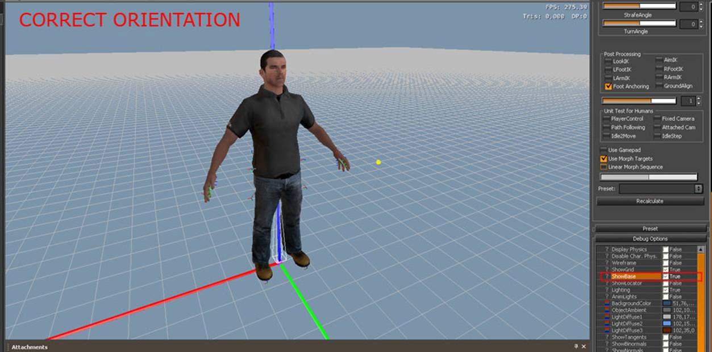
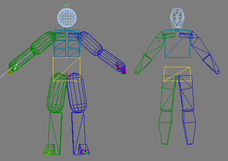

Обзор
Следуя этим руководствам, пользователи узнают, как создать персонажа, предназначенного для CRYENGINE. Пожалуйста, убедитесь, что у вас установлены все необходимые плагины. Существуют различные инструменты проверки, которые предупредят вас, если что-то настроено неправильно при экспорте, но если проблемы все еще остаются, эта страница также должна помочь.
Примеры файлов
Прежде чем продолжить, вам необходимо загрузить Agent.rar. Этот файл содержит все, что будет обсуждаться в темах ниже.
Макет файла
Именование двуногих иерархий не обязательно должно соответствовать организационному методу 3ds Max. Это необходимо только в том случае, если вы хотите использовать существующие анимации. Есть еще несколько вещей, которые уже заданы с помощью соглашений об именах Bip, но их можно изменить в файле, в котором вы определяете параметры для IK, файле .chrparams. Есть также некоторые жестко запрограммированные соединения, которые подробно описаны здесь: Выравнивание ног и ступней
По большей части .chr является основным форматом файлов символов CRYENGINE. Существует также .skin, который используется для сеток со шкурой. Какие бы вложения со скином у вас ни были, они будут прикреплены к .chr в редакторе символов, и оттуда будет сохранен файл .cdf, который будет использоваться в качестве файла основного персонажа. Полный обзор форматов файлов, используемых в CRYENGINE, см.: Справочник по типам файлов художественных ресурсов.
Ниже приводится краткое объяснение основной терминологии, которая будет использоваться при создании персонажей. Эти термины включают сетки рендеринга (вложения .skin), общий анимированный скелет (файлы .chr) и физический скелет (включенный в файл .chr).
Сетка рендеринга (файлы .skin)
Это отображенная геометрия персонажей, которую вы видите в игре, которая будет экспортирована в виде .skin.
- Это активы, которые могут иметь сетки LOD (уровень детализации) с более низким полигональным разрешением, которые автоматически исчезают в зависимости от вашего расстояния от персонажа в игровом мире.

Прежде чем прикреплять сетку рендеринга к ригу, следует помнить:
- Его ось должна быть на уровне 0,0,0.
- Персонаж должен быть изначально настроен с Z вверх и Y вперед. Пользователям Maya, работающим в среде Y-up, возможно, потребуется создать узел SceneRoot. Для получения дополнительной информации посетите: .
- К узлу, используемому для его экспорта, не должно быть применено никаких преобразований (поз., поворот, масштаб).
- Убедитесь, что модель соответствует суставам скелета.
- Живой деформирующийся скелет должен находиться в связанной позе, когда вы применяете модификатор Skin.
- Чтобы получить наилучший предварительный просмотр скинов, который вы видите в CRYENGINE в своем инструменте DCC, убедитесь, что ваш модификатор скина использует Dual Quaternion с максимум 4 влияниями костей на вершину (или 8, если вы экспортируете 8 весов). В 3ds Max модификатору Cryskin уже установлены эти значения.
Живой деформирующийся скелет (файлы .chr)
Это скелет, который деформирует сетки рендеринга (анимацию), а также имеет родительскую физическую геометрию, которая экспортируется в виде файла .chr. Кости можно использовать для чего угодно, будь то простая анимация или помощники для оружия или эффектов частиц, из которых можно излучать.
- Геометрия этого скелета используется для обнаружения попаданий и физики живого персонажа (не рэгдолла).
- Материалы, примененные к геометрии, используются для обнаружения ударов, чтобы сообщить движку, в какую часть персонажа вы попали.

Вот несколько общих советов, которым следует следовать при настройке оборудования:
- В иерархии могут быть узлы прикрепления, такие как:
- Пример: $weapon_bone: здесь в движке будет прикреплено оружие.
- Помимо узлов крепления, могут использоваться некоторые дополнительные узлы для автоматического определения положения стопы и походки:
- $Bip01 L Heel и $Bip01 L Toe0Nub на левой ноге (также присутствует на правой ноге).
- Если вы хотите, чтобы элементы оснастки находились внутри иерархии, держите их на периферии и используйте префикс «_», чтобы комментировать их и их дочерние элементы вне экспорта.
- Скелет должен быть обращен к оси +Y и +Z вверх.
- К узлам иерархии не следует применять масштаб.
- Опорная точка корневой кости должна быть расположена в точке 0,0,0 в пространстве мировых координат и должна быть обращена +Y вперед и +Z вверх без какого-либо дополнительного смещения.
- Чтобы lookIK работал, кости позвоночника и головы должны соответствовать ориентации и названиям скелета двуногого человека, но их можно изменить.
- Имена: Bip01 Head, Bip01 Neck, Bip01 Spine3 и Bip01 Spine2.
- Если вам необходимо иметь их в иерархии и они экспортируются в движок, постарайтесь, чтобы они не были сплайнами или фигурами; преобразовать их в полигоны.
- Имейте в виду, что любые элементы оснастки внутри иерархии, которые экспортируются, будут иметь нулевые кости в движке и будут занимать память/CPU время, поэтому делайте это экономно.
- Хорошей идеей будет сначала поместить подматы с хитовым материалом для скелетов гуманоидов, которые вы будете использовать повторно. Таким образом, числа не будут меняться в зависимости от того, сколько различных подматов текстуры вы используете.
- Убедитесь, что все модели NOT связаны с чем-либо. Например, если штаны вашего персонажа будут связаны с его руками, это приведет к ошибке в экспортере, в результате чего он создаст несколько скелетов.
Физический скелет
Этот скелет вложен в ту же сцену, что и «Живой деформирующийся скелет». Вы можете думать об этом как о наборе переключателей; присутствие узла в этом скелете означает, что его аналог в живом деформирующемся скелете физикализуется в движке, пока персонаж жив и мертв. В Maya этот скелет используется только для узлов parentFrame, поскольку скелет живой деформации может хранить все физические параметры, даже не имея возможности напрямую связывать прокси физики с суставами.
Вот несколько общих советов, которые следует учитывать при подготовке скелета:
- Каждый узел в этом скелете также хранит физические свойства соответствующей кости в иерархии деформаций; это хранится в свойствах кости phys IK. Независимо от программы, в которой вы работаете для экспорта, этот скелет имеет решающее значение для эффективного и четкого моделирования тряпичной куклы. Дополнительную информацию о ParentFrames см.: IK, вращение, демпфирование и ParentFrames
- Поскольку живой скелет уже содержит физическую геометрию; этот скелет, скорее всего, будет копией этих фигур.
- Расположение и ориентация шарниров должны быть идентичны суставам, с которыми они связаны.
Для сборок до 3.5
Скелет Рэгдолла
Это скелет, который деформирует сетки рендеринга в случае симуляции ragdoll. Этот скелет экспортируется как LOD живого деформирующегося скелета. Этот скелет обычно похож (в большинстве случаев идентичен) деформирующему скелету Live со связанными с ним физическими прокси.
Каждый узел в этом скелете также хранит физические свойства соответствующей кости в иерархии деформации. Это хранится в свойствах физической кости IK.